Planned relocation
- Fault
agctl relocate goldengate oggsource --node ggrac2- Measured
- RTO, does
gg_srcpdbmove along
64.5 s median, 54.3–65.4
3 / 3 passed GoldenGate and the service end on ggrac2, 0 rows lost. Max lag 60–69 s.
Oracle AI Database 26ai (23.26) RAC as the source, GoldenGate 23.26 Microservices kept highly available by XAG on ACFS, a single-instance target. Tests T1–T10 cut power, kill processes and split the interconnect, then record how long replication needs to come back and whether any row is lost.
Oracle Maximum Availability Architecture (MAA) describes GoldenGate Microservices on RAC with XAG and a
shared file system. Most public material shows the planned move, agctl relocate. This lab builds the same layout
on a laptop and then measures what happens when something fails without warning.
One configuration file, lab.config.psd1. Every step can be run again; a half-finished step stops with
instructions and deletes nothing.
The test automation runs on the host, samples cluster, GoldenGate and lag over SSH about every second, and writes one set of result files per run: events, lag, load, data comparison, summary.
Expectations are written down before each fault. Runs that did not match, and runs spoiled by the automation, stay in the record with the reason.
gginfra serves DNS (with the SCAN round-robin) and NTP. ggrac1 and ggrac2 form the
cluster with Grid Infrastructure 23.26.4, the RAC database ggcdb with PDB SRCPDB, and the GoldenGate
software on both nodes. ggtgt holds the target database tgtcdb / TGTPDB and its own GoldenGate deployment.
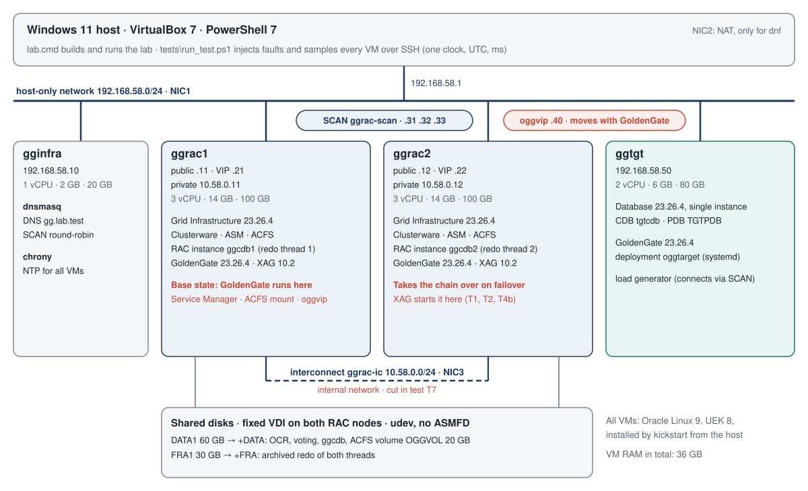
lab.config.psd1. The two shared disks are fixed-size VDI files attached to both RAC nodes.The source deployment lives on ACFS and answers on its own address, oggvip. One XAG resource has a hard
start dependency on the singleton PDB service gg_srcpdb, the ACFS file system and the VIP. It starts the Service Manager
only on the node where all three are online, so the whole chain moves together.
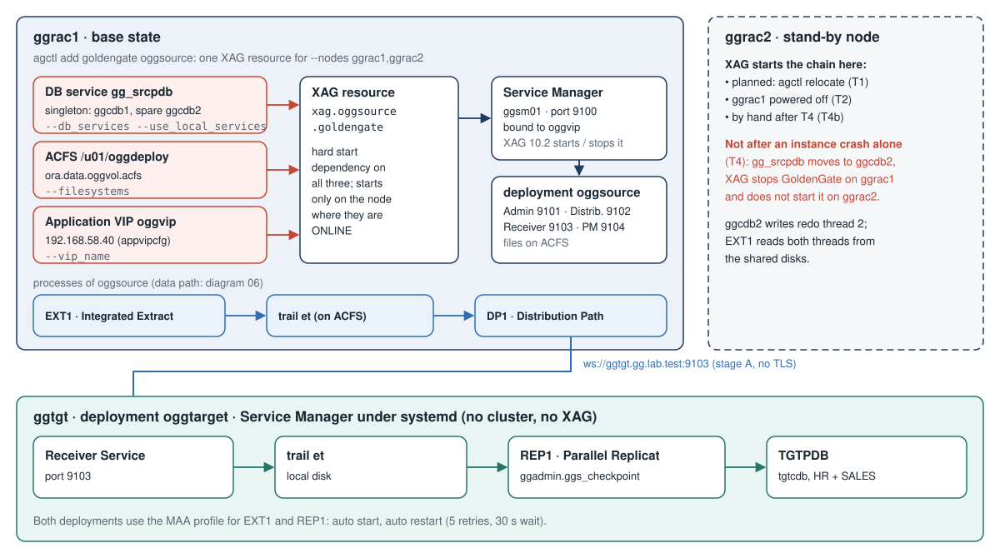
oggvip, ws:// path without TLS. Stage B (NGINX in front, as in MAA) is a configuration switch and not yet measured.A load generator commits one row at a time on both RAC instances. A single per-PDB Integrated Extract reads the redo
of both threads, writes the trail to ACFS, and a Distribution Path sends it to the Receiver on ggtgt, where a
Parallel Replicat applies it. Heartbeat rows travel the same way and give the lag.
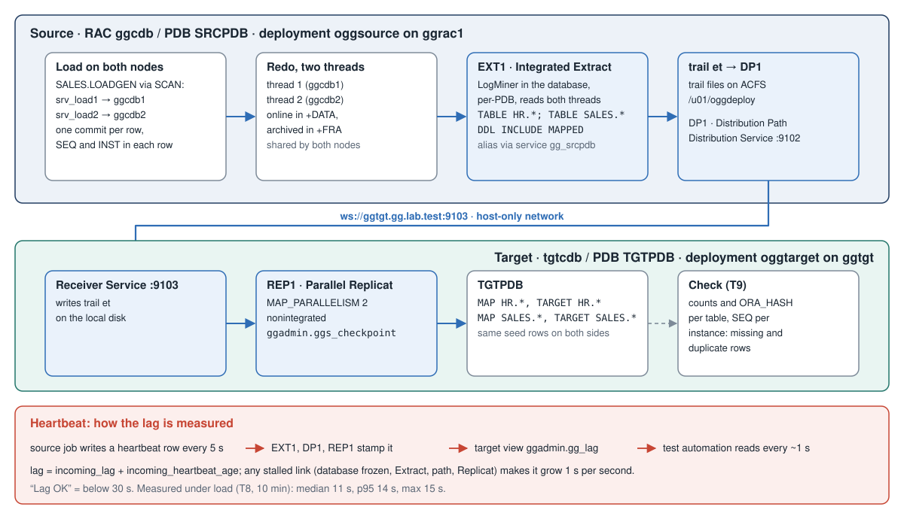
All three use the same values and the same commands. The scripts run what the manual describes. Oracle software is not in the repository: you download it yourself (list under Requirements).
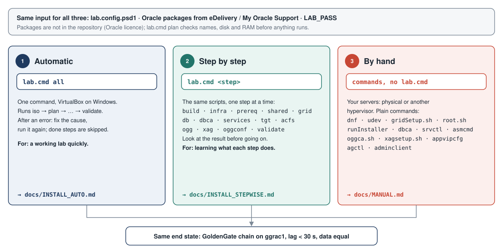
.\lab.cmd plan .\lab.cmd all
Builds the four VMs and everything on them, then validates. After an error you fix the cause and run it again.
docs/INSTALL_AUTO.md.\lab.cmd build .\lab.cmd infra # … then the next step
The same scripts one step at a time, with a check at the end of each and a note on what to look at.
docs/INSTALL_STEPWISE.mdgridSetup.sh -silent … agctl add goldengate …
Plain commands for your own servers, physical or in another hypervisor: no lab.cmd, no VirtualBox.
Measured on 16.11.2026 on VirtualBox, three runs for most tests. RTO = seconds from the fault until the lag is below 30 s again. Ranges are min–max of the passed runs. Full procedure: TESTS.md.
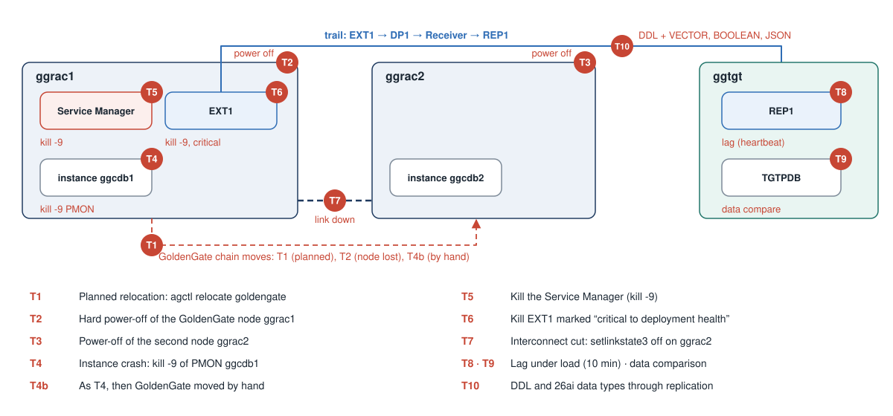
agctl relocate goldengate oggsource --node ggrac2gg_srcpdb move along3 / 3 passed GoldenGate and the service end on ggrac2, 0 rows lost. Max lag 60–69 s.
VBoxManage controlvm ggrac1 poweroff3 / 3 passed ggrac1 evicted after about 33 s, XAG starts the chain on ggrac2 without a human. 0 rows lost.
VBoxManage controlvm ggrac2 poweroff3 / 3 passed GoldenGate stays on ggrac1. The first ~32 s the cluster is frozen until ggrac2 is evicted. In one run Extract stalled about 60 s more; cause not found.
kill -9 of PMON of ggcdb1, node stays up0 / 2 valid runs passed The service moves to ggcdb2 in about 5 s; XAG stops GoldenGate on ggrac1 and does not start it on ggrac2.
Replication waits for a human. CRS restarts the instance locally at most twice an hour (default RESTART_ATTEMPTS=2).
3 / 3 with 1 manual step GoldenGate, VIP and ACFS end on ggrac2 with the service. 0 rows lost.
kill -9 of the ServiceManager process3 / 3 passed XAG restarts it on ggrac1 every time. Extract goes through ABENDED and runs again about 25–30 s after the Service Manager.
kill -9 of EXT1 flagged Critical to deployment health3 / 3 passed Restart in place on ggrac1; the flag did not block it. The flag is set by hand in the web UI before the test.
VBoxManage controlvm ggrac2 setlinkstate3 off1 / 1 passed For about 65 s the cluster shows no change; then ggrac2, the node with the cut link, is evicted. GoldenGate stays on ggrac1. Max lag 129 s. Back to base state took 641 s.
passed 6,552 rows from instance 1 and 6,516 from instance 2, identical on both sides.
ORA_HASH sums per table, SEQ per instancepassed The same check closes every failure test above.
VECTOR, BOOLEAN, JSON; ALTER TABLE … ADD; row with the new columnpassed Values equal on both sides; DDL INCLUDE MAPPED carries the column change.
Not counted above: runs stopped by the automation itself (lab not in the base state, file lock, a wrong fault command). They are listed with the reason in docs/RESULTS.md.
The median T2 run, drawn from its own event and lag files. Each bar is one cluster or GoldenGate resource; the point marks the first sample in the new state.
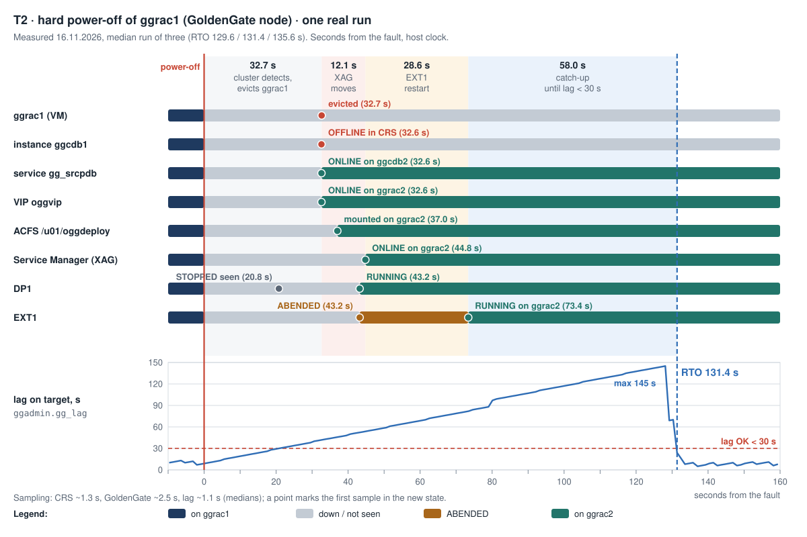
Generated from the result files by tools/make_charts.py. Details and every run: docs/RESULTS.md.
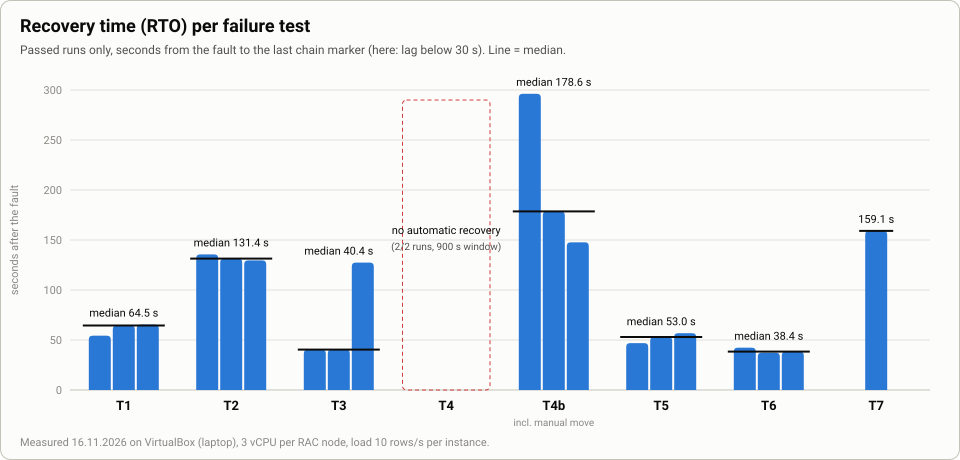
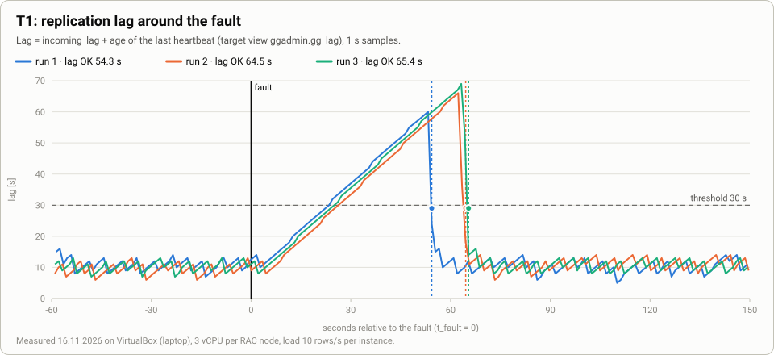
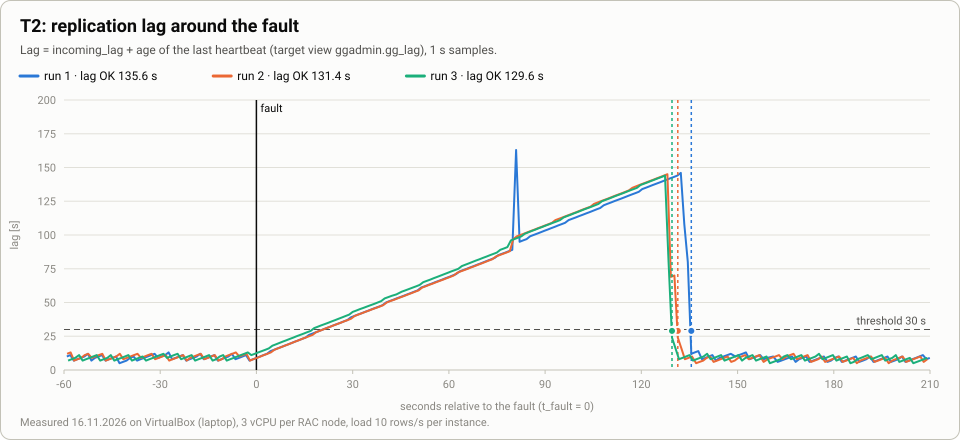
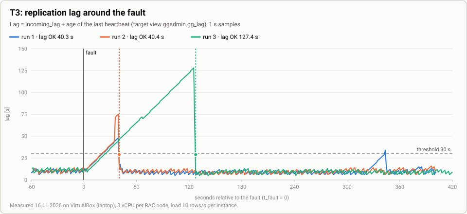
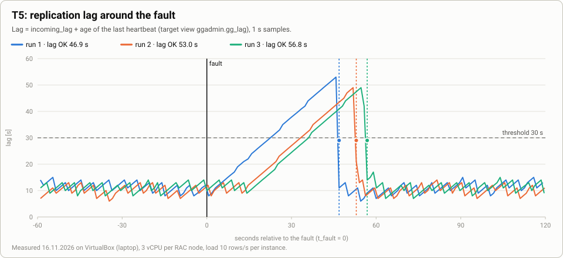
Details: docs/ENVIRONMENT.md
From Oracle Software Delivery Cloud (eDelivery) and My Oracle Support; you need the right to use them.
lab.cmd plan checks the file names.
| Component | File / patch |
|---|---|
| Grid Infrastructure 23.26.1 | V1054596-01 |
| Database 23.26.1 | V1054592-01 |
| RU 23.26.4 GI / DB | p40002013 · p40007731 |
| OPatch for 23.x | p6880880 |
| GoldenGate 23.26.4.0.2 | p40225913 |
| XAG 10.2 | p31215432 |
A film walks through the build and the failure tests, with the measured times on screen. The link appears here after the premiere.